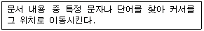
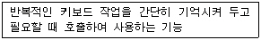
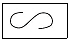
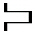
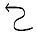
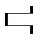

워드프로세서-3급(폐지) (2005-05-22 기출문제)
1과목: 워드프로세서 용어 및 기능
1. 다음 중 입력하고자 하는 원본의 좌표를 판독하여 컴퓨터에 설계도면이나 도형 등을 입력하는데 사용하는 입력장치는?
- 터치 패드(Touch Pad)
- 디지타이저(Digitizer)
- 플로터(Plotter)
- 스캐너(Scanner)
(정답률: 68%)

2. 워드프로세서 화면에서 커서의 위치를 알 수 있는 곳은?
- 상황줄(Status Line)
- 주메뉴(Main Menu)
- 기본 도구 모음
- 서식 도구 모음
(정답률: 80%)
3. 다음은 워드프로세서 편집기능 중 무엇에 대한 설명인가?

- 치환(Replace)
- 검색(Search)
- 정렬(Sort)
- 워드 랩(Word Wrap)
(정답률: 65%)
4. 워드프로세서에서 사용하는 키 중 단독으로 사용할 수 없는 조합키가 아닌 것은?
- [Alt]
- [Shift]
- [Ctrl]
- [Tab]
(정답률: 79%)
5. 다음 중 행두 금칙문자가 아닌 것은?
- ☎
- ?
- !
- ;
(정답률: 83%)
6. 다음 중 문서 작업시 겹쳐쓰기(Overwrite)와 관련이 있는 용어는?
- 삽입
- 삭제
- 인쇄
- 수정
(정답률: 71%)
7. 다음 중 선택된 범위의 내용을 문서의 다른 곳으로 이동시키기 위하여 버퍼에 보관하는 기능을 무엇이라고 하는가?
- 복사하기
- 잘라내기(오려두기)
- 삭제하기
- 붙이기
(정답률: 71%)
8. 다음 중 작성하는 문서의 균형을 위하여 페이지의 상, 하, 좌, 우에 여백을 두는 것을 무엇이라고 하는가?
- 마진(Margin)
- 레이아웃(Layout)
- 래그드(Ragged)
- 포맷(Format)
(정답률: 85%)
9. 다음 중 하나의 단어나 문구를 마우스로 클릭하면 그 용어에 관련된 파일이나 인터넷 사이트로 연결시켜 주는 기능은?
- 하이퍼텍스트(Hypertext)
- 캡션(Caption)
- 사전(Dictionary)
- 소트(Sort)
(정답률: 78%)
10. 다음 중에서 마우스의 기능이 아닌 것은?
- 문자의 입력
- 커서의 이동
- 프로그램의 실행
- 영역의 지정
(정답률: 81%)
11. 다음 중 화면을 위, 아래나 오른쪽, 왼쪽으로 이동시켜 보이지 않는 문서의 내용을 보이게 하는 기능을 가진 것은?
- 상황 표시줄(Status Line)
- 이동막대(Scroll Bar)
- 메뉴표시줄(Menu Bar)
- 눈금자(Ruler)
(정답률: 78%)
12. 다음 중 아래의 내용이 설명하는 기능으로 옳은 것은?

- 하이퍼텍스트
- 메일머지
- 상용구
- 매크로
(정답률: 49%)
13. 다음 중 CPU 내부에 존재하는 임시 기억장치로 연산의 결과나 주소 등이 일시적으로 보관되는 기억장치는?
- 캐시기억장치
- 주기억장치
- 레지스터
- 보조기억장치
(정답률: 56%)
14. 다음 용어 설명 중 옳은 것은?
- 하드 카피(Hard Copy) : 화면에 보이는 내용을 그대로 저장하는 것이다.
- 화소(Pixel) : 인쇄에서 활자의 크기를 나타내는 단위이다.
- 래그드(Ragged) : 두 개의 문서를 하나로 합치는 기능이다.
- 소트(Sort) : 문서 중 일부분을 오름차순 또는 내림차순으로 재배열하고 싶을 때 사용하는 기능이다.
(정답률: 63%)
15. 다음 중에서 그래픽 파일의 확장자가 아닌 것은?
- GIF
- BMP
- TXT
- JPG
(정답률: 73%)
16. 다음 중에서 강제 개행(Carriage Return)과 관련이 있는 키는?
- [End]
- [Back Space]
- [Enter]
- [Caps Lock]
(정답률: 81%)
17. 다음 중 현재 줄의 맨 앞으로 커서를 이동시키는 키는?
- [Page Up]
- [Home]
- [Page Down]
- [Esc]
(정답률: 78%)
18. 다음 중 보조기억장치가 아닌 것은?
- 플로피디스크
- CD-ROM
- 하드디스크
- ROM
(정답률: 60%)
19. 다음 교정부호의 의미로 옳은 것은?

- 글자의 순서를 바꾼다.
- 글자의 위치를 내린다.
- 글자의 위치를 올린다.
- 엎어진 글자를 바로 잡는다.
(정답률: 87%)
20. 다음 중에서 들여 쓰기를 나타내는 교정부호는?



(정답률: 76%)
2과목: PC 운영 체제
21. 다음 중 한글 Windows 98에서 [화면 보호기]에 대한 설명으로 옳지 않은 것은?
- 암호를 지정해서 사용자 이외의 다른 사람이 해제할 수 없도록 할 수도 있다.
- [화면 보호기]의 해제는 마우스를 움직이거나 키보드 입력 등을 통해 이루어진다.
- [화면 보호기]는 장시간 모니터를 사용하지 않을 경우 자동적으로 전원을 끄도록 할 수 있다.
- [화면 보호기]의 설정은 [제어판]-[전원]에서 한다.
(정답률: 53%)
22. 한글 Windows 98을 종료하려고 할 때 나타나는 [Windows 종료] 대화상자의 선택 항목이 아닌 것은?
- 시스템 종료
- 시스템 다시 시작
- 인터넷 사용을 위한 다시 시작
- MS-DOS 모드에서 시스템 다시 시작
(정답률: 59%)
23. 한글 Windows 98에서 설치된 구성요소를 제거하거나 새로운 구성요소를 설치하려면 [제어판]의 어느 프로그램을 이용하여 설정해야 하는가?
- 시스템
- 프로그램 추가/제거
- 사용자
- 인터넷 옵션
(정답률: 80%)
24. 다음 중 한글 Windows 98의 폴더 창에서 파일의 크기를 표시할 수 있는 [보기] 메뉴의 선택 항목은?
- 큰 아이콘
- 작은 아이콘
- 간단히
- 자세히
(정답률: 74%)
25. 한글 Windows 98의 시스템이 시작될 때 특정 응용 프로그램을 자동으로 실행되게 하려면, 해당 프로그램은 어느 폴더에 있어야 하는가?
- [시작 메뉴] 폴더
- [시작 프로그램] 폴더
- [바탕 화면] 폴더
- [Program Files] 폴더
(정답률: 59%)
26. 한글 Windows 98의 탐색기에서 여러 개의 파일을 선택할 경우에 가장 관련이 없는 것은?
- [Shift] 키
- [Ctrl] 키
- 마우스 왼쪽 단추
- [Esc] 키
(정답률: 69%)
27. 다음 중 한글 Windows 98의 파일과 폴더에 대한 설명으로 옳지 않은 것은?
- DOS와는 달리 무제한 길이의 파일 이름을 가질 수 있다.
- 폴더는 계층적 구조를 갖는다.
- 폴더는 수시로 삭제, 이동, 만들기가 가능하다.
- 동일한 폴더 내에는 동일한 이름을 갖는 여러 파일들이 존재할 수 없다.
(정답률: 54%)
28. 다음 중 한글 Windows 98에서 임의의 폴더 창에 있는 파일의 이름을 바꾸려고 하는 방법으로 옳지 않은 것은?
- 해당 파일을 선택한 후에 폴더 창의 [파일] 메뉴에서 [이름 바꾸기]를 이용한다.
- 해당 파일을 선택한 후에 바로 가기 메뉴에서 [이름 바꾸기]를 선택한다.
- 해당 파일을 일단 삭제한 후에 [휴지통]에서 파일 이름을 바꾸어 복원시킨다.
- 해당 파일을 선택한 후에 이름 부분을 마우스로 클릭한 다음 변경한다.
(정답률: 70%)
29. 한글 Windows 98의 바탕화면에서 표시되는 아이콘의 정렬 방법이 아닌 것은?
- 이름 순으로 정렬
- 크기 순으로 정렬
- 날짜 순으로 정렬
- 내용 순으로 정렬
(정답률: 67%)
30. 다음 중 한글 Windows 98의 바탕 화면에 있는 [내 컴퓨터]를 이용하여 할 수 없는 작업은?
- 프로그램의 실행
- 시스템에 장착된 모든 디스크 드라이브와 폴더의 관리
- 해당 드라이브에서 필요한 폴더의 작성과 디스크의 초기화
- 시스템 종료
(정답률: 65%)
31. 한글 Windows 98에서 문서의 일부 내용을 잘라내거나 복사, 붙여넣기를 할 때 사용되는 임시 기억 장소는?
- 레지스트리
- 레지스터
- 클립보드
- 메모장
(정답률: 75%)
32. 한글 Windows 98에서 응용 프로그램을 실행하는 도중에 시스템이 정지되어 아무 반응이 없을 경우에 원인을 제공한 특정 프로그램을 강제적으로 종료시킬 때 사용하는 바로가기 키는?
- [Ctrl]+[Esc]
- [Ctrl]+[C]
- [Ctrl]+[S]
- [Ctrl]+[Alt]+[Delete]
(정답률: 67%)
33. 한글 Windows 98에서 활성화된 응용 프로그램을 종료하는 방법에 대한 설명이다. 다음 중 종료 방법으로 옳지 않은 것은?
- [Alt] 키+[Enter] 키를 누른다.
- 열려진 창의 오른쪽 위에 있는 닫기단추()를 누른다.
- 활성창의 제목 표시줄 왼쪽에 있는 아이콘을 두 번 누른다.
- 메뉴 표시줄에서 [파일]을 선택한 후 [닫기] 또는 [종료]를 선택한다.
(정답률: 63%)
34. 다음 중에서 한글 Windows 98의 클립보드와 관련된 기능키에 대한 설명으로 옳은 것은?
- [Ctrl] + [X] : 붙여넣기
- [Ctrl] + [C] : 잘라내기
- [Ctrl] + [V] : 복사
- [Print Screen] : 전체화면 캡쳐(Capture)
(정답률: 68%)
35. 한글 Windows 98의 작업 표시줄에 있는 [시작] 단추에서 마우스의 오른쪽 버튼으로 눌렀을 때 나타나는 메뉴 항목이 아닌 것은?
- 열기
- 실행
- 탐색
- 찾기
(정답률: 54%)
36. 다음 중 한글 Windows 98에서 문자 입력시 기본언어를 재설정하거나 새로운 언어를 추가하기 위한 제어판의 항목은?
- 글꼴
- 날짜 및 시간
- 키보드
- 내게 필요한 옵션
(정답률: 36%)
37. 한글 Windows 98에서 배경화면 및 화면의 해상도를 바꾸려면 [제어판]의 어떤 프로그램에서 작업을 해야 하는가?
- 내게 필요한 옵션
- 디스플레이
- 하드웨어 추가/삭제
- 시스템
(정답률: 50%)
38. 한글 Windows 98에서 하나의 파일을 선택한 후 [Ctrl]+[C]키를 누른 후 다른 폴더로 이동하여 [Ctrl]+[V]키를 눌렀을 경우에 수행되는 작업으로 옳은 것은?
- 파일의 복사
- 파일의 이동
- 파일의 삭제
- 파일의 단축 아이콘 만들기
(정답률: 68%)
39. 한글 Windows 98에서 [도움말]을 보기 위해 사용하는 바로 가기 키는?
- [F1]
- [F2]
- [F3]
- [F4]
(정답률: 77%)
40. 다음 중 한글 Windows 98에서 [내 컴퓨터]-[프린터] 창에 있는 프린터의 등록정보 창에서 설정할 수 없는 것은?
- 용지 규격
- 글꼴 및 폰트의 크기
- 스풀 설정
- 인쇄 방향
(정답률: 48%)